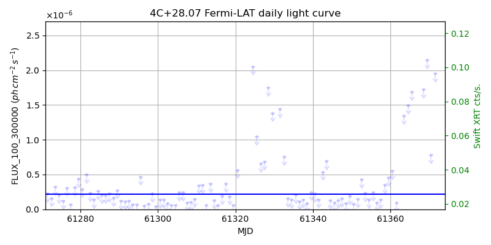
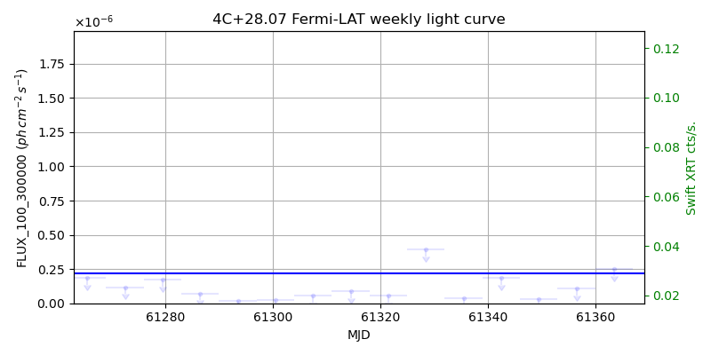
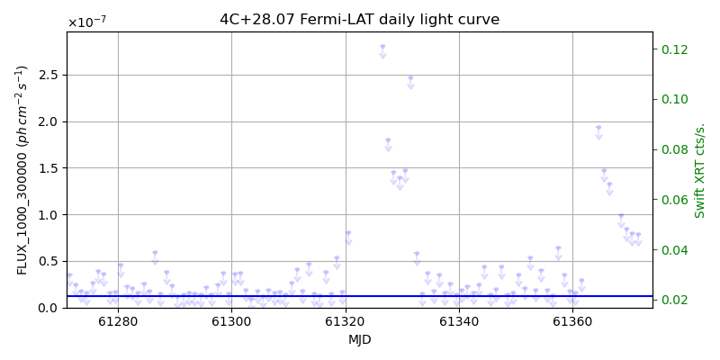

LAT Lightcurve site: https://fermi.gsfc.nasa.gov/ssc/data/access/lat/msl_lc/source/4C_p28d07
Swift site: https://www.swift.psu.edu/monitoring/source.php?source=4C+28.07
NED: Query
Time of last update of this page: UT: 2026-11-28 16:12 (MJD: 61372.676)
| Property | Value |
|---|---|
| R.A. | 2:37:52.32 |
| Dec. | 28:48:07.2 |
| z | 1.213 |
| 3FGL SpectrumType | LogParabola |
| 3FGL PL Index | |
| 3FGL Flux_100_300000 | 2.18e-07 1 / (s cm2) |
| 3FGL Flux_1000_300000 | 1.25e-08 1 / (s cm2) |
| 3FGL Flux >200 GeV | 2.06e-12 1 / (s cm2) |
| 3FGL Extrap. Crab >200 GeV | 0.01 |
| 3FGL Flux After EBL Absorption >200GeV | 1.61e-14 1 / (s cm2) |
| 3FGL EBL Crab Fraction >200GeV | 0.00 |

| MJD | dMJD | Flux | dFlux | Frac3FGL | FracCrab>200GeV | EBLFracCrab>200GeV |
|---|---|---|---|---|---|---|
| 61367.50 | 0.50 | 3.02e-06 | 0.00e+00 | 0.00 | 0.00 | 0.00 |
| 61368.50 | 0.50 | 1.72e-06 | 0.00e+00 | 0.00 | 0.00 | 0.00 |
| 61369.50 | 0.50 | 2.15e-06 | 0.00e+00 | 0.00 | 0.00 | 0.00 |
| 61370.50 | 0.50 | 7.82e-07 | 0.00e+00 | 0.00 | 0.00 | 0.00 |
| 61371.50 | 0.50 | 1.95e-06 | 0.00e+00 | 0.00 | 0.00 | 0.00 |

| MJD | dMJD | Flux | dFlux | Frac3FGL | FracCrab>200GeV | EBLFracCrab>200GeV |
|---|---|---|---|---|---|---|
| 61335.50 | 3.50 | 3.97e-08 | 0.00e+00 | 0.00 | 0.00 | 0.00 |
| 61342.50 | 3.50 | 1.84e-07 | 0.00e+00 | 0.00 | 0.00 | 0.00 |
| 61349.50 | 3.50 | 3.33e-08 | 0.00e+00 | 0.00 | 0.00 | 0.00 |
| 61356.50 | 3.50 | 1.08e-07 | 0.00e+00 | 0.00 | 0.00 | 0.00 |
| 61363.50 | 3.50 | 2.51e-07 | 0.00e+00 | 0.00 | 0.00 | 0.00 |

| MJD | dMJD | Flux | dFlux | Frac3FGL | FracCrab>200GeV | EBLFracCrab>200GeV |
|---|---|---|---|---|---|---|
| 61367.50 | 0.50 | 3.11e-07 | 0.00e+00 | 0.00 | 0.00 | 0.00 |
| 61368.50 | 0.50 | 9.89e-08 | 0.00e+00 | 0.00 | 0.00 | 0.00 |
| 61369.50 | 0.50 | 8.47e-08 | 0.00e+00 | 0.00 | 0.00 | 0.00 |
| 61370.50 | 0.50 | 7.97e-08 | 0.00e+00 | 0.00 | 0.00 | 0.00 |
| 61371.50 | 0.50 | 7.94e-08 | 0.00e+00 | 0.00 | 0.00 | 0.00 |
| MJD | dMJD | Flux | dFlux | Frac3FGL | FracCrab>200GeV | EBLFracCrab>200GeV |
|---|---|---|---|---|---|---|
| 61335.50 | 3.50 | 4.73e-09 | 0.00e+00 | 0.00 | 0.00 | 0.00 |
| 61342.50 | 3.50 | 3.27e-09 | 0.00e+00 | 0.00 | 0.00 | 0.00 |
| 61349.50 | 3.50 | 8.72e-09 | 0.00e+00 | 0.00 | 0.00 | 0.00 |
| 61356.50 | 3.50 | 7.45e-09 | 0.00e+00 | 0.00 | 0.00 | 0.00 |
| 61363.50 | 3.50 | 1.01e-08 | 0.00e+00 | 0.00 | 0.00 | 0.00 |
--------------------------------------------------------- Using user-supplied coords: 2:37:52.32 28:48:07.2 2000 --------------------------------------------------------- FLWO UT night of: 2026-11-29 Local Sid. @ Midnight: 04:08 Sunset (-15.0) (local, UT): 18:31 01:31 Sunrise (-15.0) (local, UT): 05:53 12:53 Moonrise (local, UT): 21:57 04:57 Moonset (local, UT): Moon phase: 0.72 --------------------------------------------------------- AzTime LSID UT Obj_el Obj_az Mn_el Mn_az Sep. --------------------------------------------------------- 18:31 22:39 01:31 38.8 76.5 -32.9 32.1 82.7 19:01 23:09 02:01 45.0 79.2 -29.4 38.9 83.0 19:31 23:39 02:31 51.3 82.0 -25.4 45.0 83.4 20:01 00:09 03:01 57.7 85.0 -21.0 50.6 83.7 20:31 00:39 03:31 64.1 88.2 -16.2 55.6 84.1 21:01 01:09 04:01 70.5 92.3 -11.1 60.2 84.4 21:31 01:39 04:31 76.8 98.2 -5.4 64.5 84.7 22:01 02:09 05:01 83.0 111.4 0.4 68.5 85.0 22:31 02:39 05:31 87.2 182.2 5.8 72.2 85.3 23:01 03:10 06:01 82.9 249.3 11.6 75.8 85.6 23:31 03:40 06:31 76.6 262.0 17.5 79.4 85.9 00:01 04:10 07:01 70.3 267.9 23.6 82.9 86.1 00:31 04:40 07:31 63.9 271.9 29.7 86.5 86.4 01:01 05:10 08:01 57.5 275.1 35.8 90.3 86.6 01:31 05:40 08:31 51.1 278.1 42.0 94.4 86.8 02:01 06:10 09:01 44.8 280.8 48.1 99.1 87.1 02:31 06:40 09:31 38.6 283.6 54.2 104.7 87.3 03:01 07:10 10:01 32.4 286.4 60.1 111.7 87.5 03:31 07:40 10:31 26.3 289.2 65.6 121.1 87.7 04:01 08:10 11:01 20.3 292.2 70.5 134.7 87.9 04:31 08:40 11:31 14.5 295.3 74.0 154.7 88.1 05:01 09:11 12:01 8.8 298.7 75.2 181.1 88.3 05:31 09:41 12:31 3.4 302.3 73.6 206.8 88.5 05:53 10:02 12:53 -0.1 305.1 71.0 221.2 88.6 --------------------------------------------------------- Dark hours >55 deg.: 2.14 srcstart (UT): 2026-11-29 02:48 srcend (UT): 2026-11-29 04:57